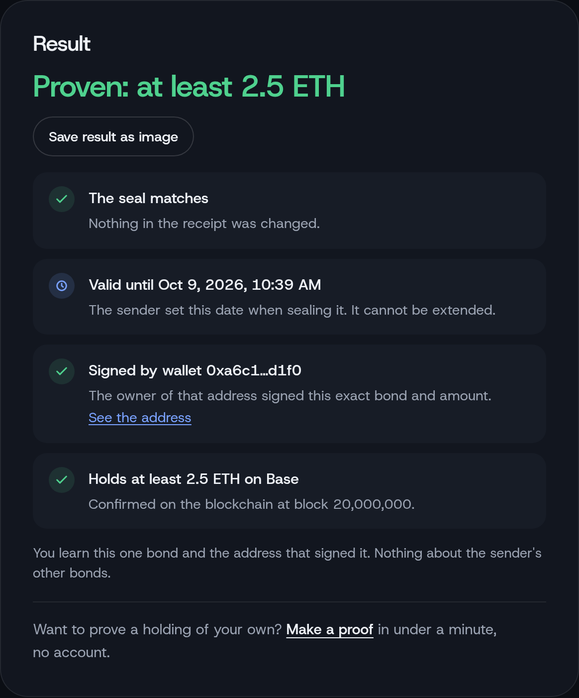
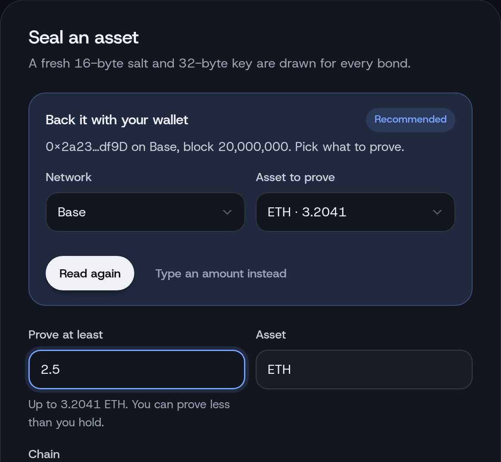

<!doctype html>
<html lang="en">
<head>
<meta charset="utf-8">
<title>HeldAt social images</title>
<!--
  Source for assets/social/: the X header (1500x500) and two profile pictures
  (1000x1000). Rendered by tools/render-social.mjs. ?asset=header | pfp-blue | pfp-white.
  The two windows in the header are screenshots of the real site (tools/social/).
-->
<style>
  @font-face { font-family: "Host Grotesk"; font-weight: 300 800; src: url(../assets/fonts/host-grotesk-latin.woff2) format("woff2"); }
  @font-face { font-family: "JetBrains Mono"; font-weight: 400 600; src: url(../assets/fonts/jetbrains-mono-latin.woff2) format("woff2"); }
  * { margin: 0; padding: 0; box-sizing: border-box; }
  body { font-family: "Host Grotesk", sans-serif; -webkit-font-smoothing: antialiased; overflow: hidden; }
  canvas.field { position: absolute; inset: 0; width: 100%; height: 100%; }
  .stage { position: relative; overflow: hidden; }

  /* header: brand on the left, clear of the profile picture X lays over the
     bottom-left corner; two app windows on the right, shown whole */
  .header { width: 1500px; height: 500px; background: #090b10; color: #fff; }
  .center { position: absolute; left: 92px; top: 92px; z-index: 3; }
  .lockup { display: inline-flex; align-items: center; gap: 20px; }
  .lockup svg { width: 70px; height: 70px; color: #fff; }
  .lockup b { font-size: 80px; font-weight: 600; letter-spacing: -.045em; line-height: 1; }
  .tag { margin-top: 26px; font-size: 30px; font-weight: 560; letter-spacing: -.02em; line-height: 1.15; }
  .tag span { display: block; color: #7c8596; }
  .glow { position: absolute; z-index: 1; left: 700px; top: 20px; width: 820px; height: 480px; background: radial-gradient(ellipse 50% 50% at 55% 50%, rgba(36,88,232,.22), transparent 70%); }
  .fade { position: absolute; inset: 0; z-index: 1; background: radial-gradient(ellipse 30% 46% at 24% 40%, rgba(9,11,16,.92), transparent 80%); }
  .win { position: absolute; z-index: 2; border-radius: 14px; overflow: hidden; background: #0e1118;
    box-shadow: 0 0 0 1px rgba(255,255,255,.11), inset 0 1px 0 rgba(255,255,255,.06), 0 2px 4px rgba(0,0,0,.4), 0 24px 48px -12px rgba(0,0,0,.75), 0 60px 90px -40px rgba(0,0,0,.9); }
  .win .bar { position: relative; height: 30px; display: flex; align-items: center; gap: 7px; padding: 0 12px; background: linear-gradient(#171b24, #12151d); border-bottom: 1px solid rgba(255,255,255,.07); }
  .win .bar i { width: 10px; height: 10px; border-radius: 50%; box-shadow: inset 0 0 0 .5px rgba(0,0,0,.35); }
  .win .bar i:nth-child(1) { background: #ff5f57; } .win .bar i:nth-child(2) { background: #febc2e; } .win .bar i:nth-child(3) { background: #28c840; }
  .win .bar span { position: absolute; left: 0; right: 0; text-align: center; font-size: 12px; font-weight: 500; color: #8b93a3; letter-spacing: .01em; }
  .win img { display: block; width: 100%; }
  .win::after { content: ""; position: absolute; inset: 0; pointer-events: none; border-radius: inherit; background: linear-gradient(140deg, rgba(255,255,255,.05), transparent 35%); }
  .w-verify { width: 300px; left: 760px; top: 50px; }
  .w-console { width: 372px; height: 360px; right: 52px; top: 70px; } /* ends under the amount hint */

  /* profile pictures */
  .pfp { width: 1000px; height: 1000px; display: grid; place-items: center; }
  .pfp svg { position: relative; z-index: 2; width: 520px; height: 520px; }
  .pfp-blue { background: #2458e8; color: #fff; }
  .pfp-white { background: #fff; color: #0d1016; }
  .pfp-night { background: #090b10; color: #fff; }
</style>
</head>
<body>
<script>
const MARK = (sw) => `<svg viewBox="0 0 100 100" aria-hidden="true"><path d="M8 50H92M50 8.5V40M50 60V91.5M21.5 21L44 38.9M78.5 21L56 38.9M21.5 79L44 61.1M78.5 79L56 61.1" fill="none" stroke="currentColor" stroke-width="${sw}" stroke-linecap="round"/><path d="M42.4 40.4L48.5 48.4Q50 49.9 51.5 48.4L57.6 40.4L55.6 36.9C54.9 41.4 52.7 41.9 51.8 37.6L48.2 37.6C47.3 41.9 45.1 41.4 44.4 36.9ZM42.4 59.6L48.5 51.6Q50 50.1 51.5 51.6L57.6 59.6L55.6 63.1C54.9 58.6 52.7 58.1 51.8 62.4L48.2 62.4C47.3 58.1 45.1 58.6 44.4 63.1Z" fill="currentColor"/></svg>`;
const asset = new URLSearchParams(location.search).get("asset") || "header";

// the site's halftone: square dots in rings with an eight-point modulation
function field(canvas, w, h, { cx, cy, gap, reach, color, alpha, fadeCenter = 0 }) {
  canvas.width = w * 2; canvas.height = h * 2;
  const ctx = canvas.getContext("2d"); ctx.scale(2, 2);
  for (let y = gap / 2; y < h; y += gap) for (let x = gap / 2; x < w; x += gap) {
    const r = Math.hypot(x - cx, y - cy), a = Math.atan2(y - cy, x - cx);
    if (r < fadeCenter) continue;
    let v = (0.5 + 0.5 * Math.sin(r * (1 + 0.05 * Math.cos(8 * a)) / (gap * 1.15))) ** 2 * Math.max(0, 1 - r / reach);
    if (v < 0.05) continue;
    ctx.fillStyle = color; ctx.globalAlpha = alpha[0] + v * alpha[1];
    const s = 0.8 + v * gap * (gap > 12 ? 0.42 : 0.32); ctx.fillRect(x - s / 2, y - s / 2, s, s);
  }
}

if (asset === "header") {
  document.body.innerHTML = `<div class="stage header">
    <canvas class="field"></canvas>
    <div class="glow"></div>
    <div class="fade"></div>
    <div class="win w-verify"><div class="bar"><i></i><i></i><i></i><span>Verify a proof</span></div></div>
    <div class="win w-console"><div class="bar"><i></i><i></i><i></i><span>Console</span></div></div>
    <div class="center">
      <div class="lockup">${MARK(5.2)}<b>HeldAt</b></div>
      <p class="tag">Prove one holding. <span>Hide the rest.</span></p>
    </div></div>`;
  field(document.querySelector(".field"), 1500, 500, { cx: 360, cy: 230, gap: 9, reach: 820, color: "#d6deec", alpha: [0.06, 0.55] });
} else {
  const blue = asset === "pfp-blue", night = asset === "pfp-night";
  document.body.innerHTML = `<div class="stage pfp ${asset}"><canvas class="field"></canvas>${MARK(4.4)}</div>`;
  // the header's background: dark, with the same quiet dots
  if (night) field(document.querySelector(".field"), 1000, 1000, { cx: 500, cy: 500, gap: 14, reach: 900, color: "#d6deec", alpha: [0.06, 0.55], fadeCenter: 300 });
  else if (blue) field(document.querySelector(".field"), 1000, 1000, { cx: 500, cy: 500, gap: 18, reach: 760, color: "#dbe6ff", alpha: [0.18, 0.75], fadeCenter: 320 });
  else document.querySelector(".field").remove();
}
Promise.all([document.fonts.ready, ...[...document.images].map((i) => i.decode().catch(() => {}))]).then(() => { window.READY = true; });
</script>
</body>
</html>
